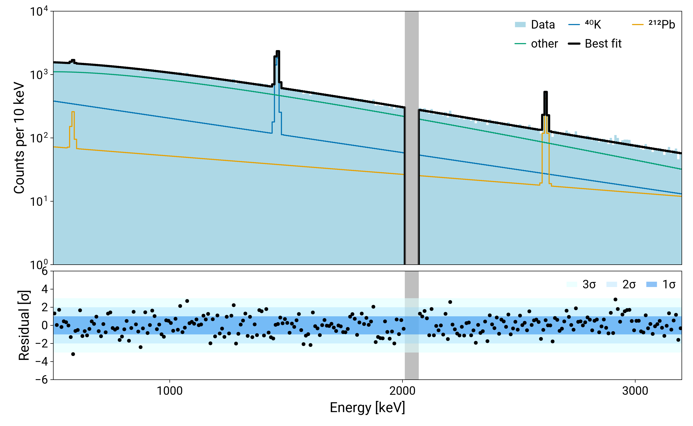
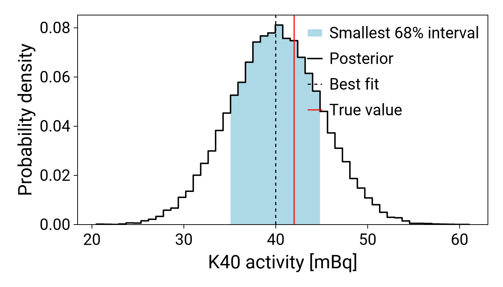

Plotting
The spectra, the best fit and its sources, and the posterior distributions are plotted with CairoMakie, by the functions of this package. The tutorial shows them for a complete fit.
Loading LegendMakie.jl changes all CairoMakie plots to the LEGEND style. It is not needed, and it also needs Format to be loaded:
using LegendMakie
import FormatHistograms of the best fit
The plots compare the measured spectrum with the prediction of the best fit as histograms in the bins of the fit. counts_to_histogram turns the measured counts into a histogram, and get_best_fit_histograms makes the histograms of the prediction for the parameters best (for example mode(samples)): the total in the key :total, followed by the contribution of each source. The bins outside of the fit range and in the blinded region are empty.
The made-up data of this example has no statistical fluctuation, so each bin is drawn from a Poisson distribution around its value:
using Random, Distributions
Random.seed!(1)
data_fluctuated = Histogram(data.edges, Float64.(rand.(Poisson.(data.weights))))
data_hist = counts_to_histogram(get_counts(data_fluctuated, bin_edges), bin_edges)
hists = get_best_fit_histograms(best, model, bin_edges)
keys(hists)KeySet for a OrderedCollections.OrderedDict{Symbol, StatsBase.Histogram{Float64, 1}} with 4 entries. Keys:
:total
:K40_hpge_bulk
:Pb212_to_Pb208_hpge_bulk
:two_vbb_hpge_bulkGrouping the sources
A fit can have many sources, and group_histograms sums them into a few groups to plot fewer lines. A group is a label with the sources that go into it, one of
- a list of source names, for example
[:K40_hpge_bulk], - a regular expression that is matched to the names, for example
r"K40", :rest, for all the sources that no other group selects.
A source goes into the first group that selects it. The labels can be any text, including Unicode characters such as superscripts and Greek letters, and they are the names in the legend. The result has the same format as hists, with the total followed by the groups:
grouped = group_histograms(
hists,
["⁴⁰K" => r"K40", "²¹²Pb" => [:Pb212_to_Pb208_hpge_bulk], "other" => :rest],
)
keys(grouped)KeySet for a OrderedCollections.OrderedDict{Symbol, StatsBase.Histogram{Float64, 1}} with 4 entries. Keys:
:total
Symbol("⁴⁰K")
Symbol("²¹²Pb")
:otherPlotting the best fit
The plot is made with a few functions that draw on a CairoMakie axis:
fit_axesmakes the figure, with an axis for the spectra and one for the residuals,plot_hist!(ax, h)draws the histogramhas a line, or filled withfilled = true. The other keywords (color,linewidth,linestyle,label, ...) go to Makie, and a line without acolorgets the next color of the palette,mark_blinded!(ax, h)draws the grey band over the empty bins ofh,plot_residuals!(ax, prediction, data)draws the residuals in units of standard deviations, with the bands of 1, 2 and 3 standard deviations unlessbands = false.
An example, with the data filled in light blue, the sources as colored lines and the best fit as a thicker black line, and with larger fonts:
import CairoMakie
# larger fonts for the axes and the legends
CairoMakie.update_theme!(
Axis = (xlabelsize = 26, ylabelsize = 26, xticklabelsize = 22, yticklabelsize = 22),
Legend = (labelsize = 22,),
)
fig, ax, ax_res = fit_axes(; ylabel = "Counts per 10 keV", size = (1300, 800))
# the data, the groups of sources (with the colors of the palette) and the best fit
plot_hist!(ax, data_hist; filled = true, color = :lightblue, label = "Data")
for (label, h) in grouped
label == :total || plot_hist!(ax, h; label = string(label))
end
plot_hist!(ax, grouped[:total]; color = :black, linewidth = 4, label = "Best fit")
# the blinded region (the empty bins) and the residuals
mark_blinded!(ax, grouped[:total])
mark_blinded!(ax_res, grouped[:total])
plot_residuals!(ax_res, grouped[:total], data_hist)
CairoMakie.xlims!(ax, 500, 3200)
CairoMakie.ylims!(ax, 1, 1e4)
CairoMakie.ylims!(ax_res, -6, 6)
CairoMakie.axislegend(ax; nbanks = 3)
CairoMakie.axislegend(ax_res; nbanks = 3)
fig
The plot can be customised. The example is only a choice of style: the colors, line styles, line widths, labels and limits are keywords of plot_hist! and of the Makie functions on the axes, so any of them can be changed, and elements can be left out or added with other Makie functions. See the Makie documentation for the options.
The Figure can be saved with CairoMakie.save("fit.png", fig).
Posterior distributions
plot_posterior!(ax, samples, name) draws the marginal posterior of the parameter name on a CairoMakie axis. samples are the samples from bat_sample: the parameters of each sample are in samples.v and its weight in samples.weight. The bins inside the smallest 68% interval (or another level) are filled, and bandcolor sets the color of the filled band (light blue here, by default the color of the line with some transparency). The keywords best and truth draw a dashed line at the best fit and a red line at a true value. The plots have labels for a legend, which CairoMakie.axislegend(ax) adds to one axis. The function returns the interval. Here the samples are made up:
Random.seed!(2)
samples = (
v = [(K40_hpge_bulk = x,) for x in 40 .+ 5 .* randn(20_000)],
weight = ones(Int, 20_000),
)
fig = CairoMakie.Figure(size = (700, 400))
ax = CairoMakie.Axis(
fig[1, 1];
xlabel = "K40 activity [mBq]",
ylabel = "Probability density",
)
interval =
plot_posterior!(ax, samples, :K40_hpge_bulk; best = 40, truth = 42, bandcolor = :lightblue)
CairoMakie.axislegend(ax)
fig
BAT.jl also has plot recipes for Plots.jl, for example for the correlation of two parameters. See the plotting section of the BAT.jl manual.